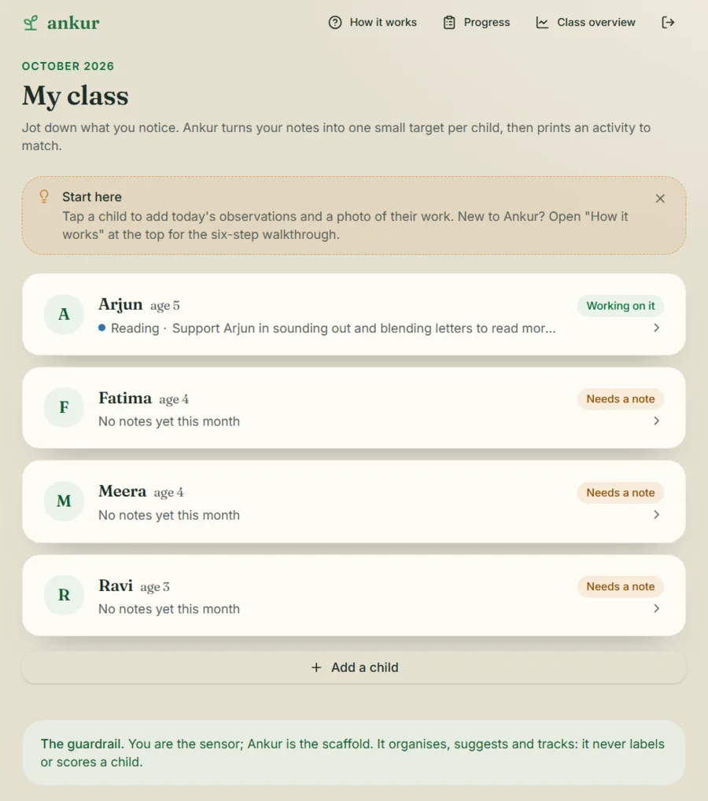
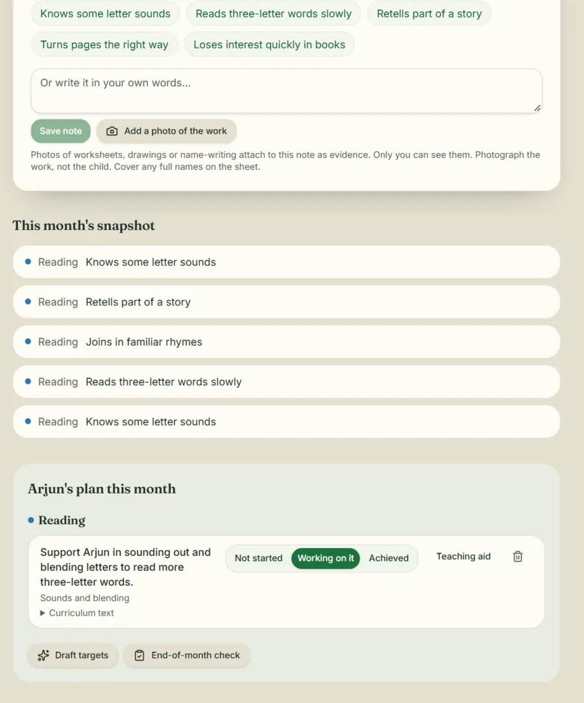
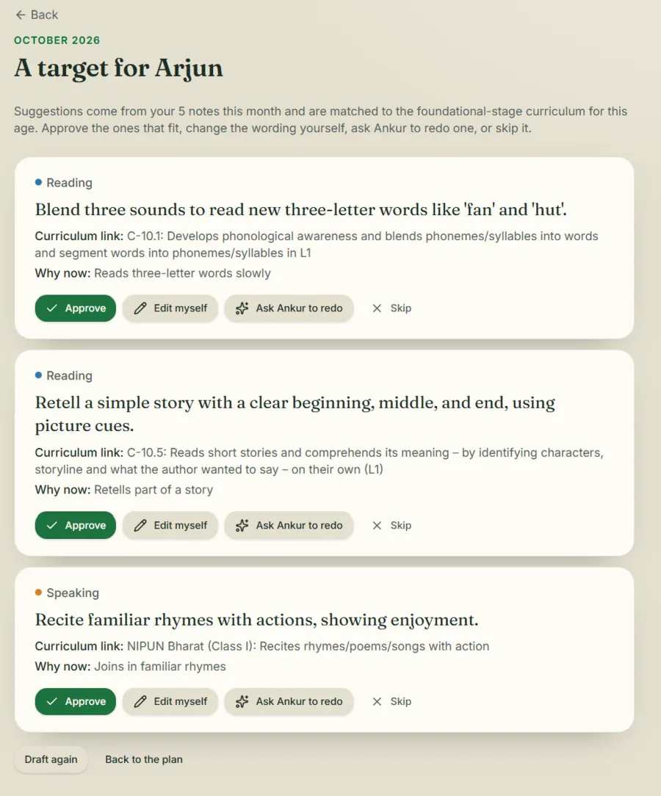
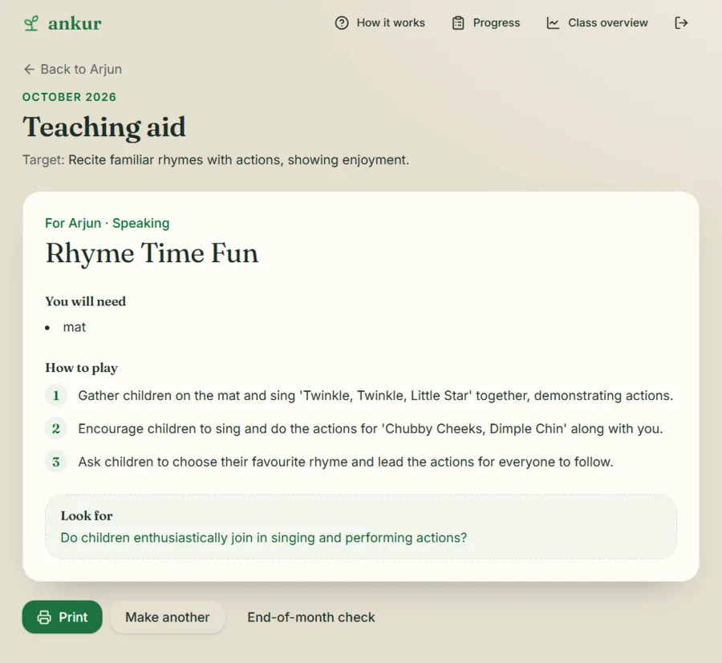

UX case study, 2026
Teachers notice everything. Nothing turns it into a plan.
Ankur is a notebook for teachers of children aged 3 to 8 in India. The teacher notices, Ankur suggests one small next step, and the teacher decides.
- Role
- Solo. Research, structure and live prototype
- Course
- Experiential Design
- Tools
- FigJam, Lovable
- Live app
- ankurs.online
- Status
- Live. I've finished teacher interviews and a first test of a basic version. I'm fixing what it showed, then testing with teachers.
The problem
Children slip through a busy classroom.
Notes sit in paper registers and get typed up twice. It's for pre-primary and Std 1 to 2 teachers and Anganwadi workers, including rural, low-internet areas.
Design process
Desk research to a live app.
Six stages. The research below is desk research from policy, published data and other tools.
How it works
How a teacher uses it, step by step.
Four steps belong to the teacher. Ankur only drafts and tracks. Pick a step to read it.
Notice
Tap what you saw: reading, writing, speaking, behaviour.
"You are the sensor; Ankur is the scaffold."
- Notice: Tap what you saw: reading, writing, speaking, behaviour. (Teacher)
- Add the work: A photo of what the child made. (Teacher)
- One small target: Drafted from India's NCF-FS competencies. (Ankur drafts)
- Decide: Approve, edit, redo or skip. Nothing is automatic. (Teacher)
- Print the activity: Low-cost play with stones, bottle caps and chalk. (Teacher)
- Check and see growth: A month-end check. "Needs more time" is a normal answer. (Ankur tracks)
Research and structure
Mapping the flow against six other tools.
Six tools compared, and none covers all five things a teacher needs. Foreign tools have the right shape; Indian tools have the right curriculum. Switch between the views.
Decisions
Decisions I made about the AI.
- Approve, edit, redo or skip.A child is never labelled or scored.
- Nicknames only, data kept on the device.It lowers the bar for schools to trust it.
- Test scores and leaderboards left out on purpose.They would break the non-diagnostic rule.
- Not another content or testing app.DIKSHA and Jaadui Pitara are partners here.
Where the decisions started.
My MoSCoW page. "Replace the teacher" sat in the Won't column from day one.
Must
- AI pattern-recognition suggestions
- Editing the AI's suggestion
- A record for each child
Should
- Classes for Std 1 to 5
- Check the Should column against your notebook
Could
- Printable worksheets
- Premade worksheets
- Integrations
Won't
- Generic AI suggestions
- Replacing the teacher
- Teaching outside the syllabus
Iterations
From a six-step loop to one small target.
Each version asked the teacher to do less and gave them one clear next step.
First concept
A six-step loop for ages 3 to 6, with the AI simulated by hand.
Course decks
A four-step loop for ages 3 to 8. The AI drafts two to four targets.
Live app
One small target per child, the printable activity back as a core step, and work photos tracked over months.
Add: why you made each change.
Final design
The live app.
The live app runs at ankurs.online, with a demo login on the sign-in page.




Screens from the live app's demo login. The children are sample data.
What's next
What has to happen before it scales.
I've finished teacher interviews and a first test of a basic version. I'm fixing what it showed, then testing with teachers. The test has to show how often teachers approve the AI's drafts.